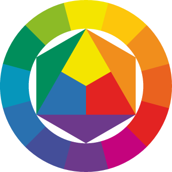

色相
Hue
它是哪一類顏色？紅、黃、藍、綠……
色彩學入門｜新手友善
色相、明度、彩度，色輪與配色關係，還有螢幕和印刷的差別。

依專案 wiki 整理｜設計入門與日常應用
01｜色彩基礎
它是哪一類顏色？紅、黃、藍、綠……
它看起來多亮或多暗？
它看起來多鮮明或灰？
實際顏色是多個線索一起作用；螢幕、紙張與周遭顏色也會改變觀感。 犬哥網站 · Shutterstock
02｜色彩基礎
照明帶來不同波長的光。人眼可見範圍約為 380–700 奈米；不同光源的光譜分布並不相同。
表面會依材質反射、散射或吸收部分入射光；透明物體也會透射光，發光物體則能自行發光。
眼睛接收離開表面的光，大腦再結合周遭脈絡形成顏色知覺。
NASA：Visible Light · Optical Society：Color and Light · MIT：Color and surface reflectance
03｜光與色彩
對單一波長的光，波長大致對應光譜色相。稜鏡讓不同波長折射不同，白光便展開成彩虹光譜。
這可以幫助理解「光比較強」，但不能把振幅直接當成明度。人眼對不同波長的敏感度不同；明亮環境下，約 555 nm 附近的光最敏感。
日常顏色多由多種波長混合而成，通常不能只用一個波長解釋。
04｜色彩基礎

色相環與色彩關係示意
伊登 12 色相環以紅、黃、藍的顏料色輪為教學模型，適合練習相鄰色、互補色等關係。
螢幕 RGB 是混合光；印刷 CMYK 是混合油墨。不同模型的原色與互補關係不完全相同。
色相環是整理關係的工具，不是唯一標準答案。不同教材對「對比色」的用法也可能不同。
05｜色彩在自然界
顏色和圖案不只用來隱藏，也能成為動物與掠食者之間的訊號。
醒目訊號提示掠食者：我可能有毒、難吃，或能防禦。掠食者經驗後可能學會避開相似訊號。
一種生物像另一種生物或物件，藉此改變觀察者的反應。
OpenStax Biology 2e：警戒色與兩種擬態 · 原始資料：raw/papers/警戒色和擬態.txt
06｜色彩在自然界
保護色是外觀適應的一部分；偽裝還可能結合圖案、姿勢、行為和棲息位置。
體色或花紋接近常見背景，讓身體較難從環境中被分辨。
斑紋跨過身體邊緣，干擾觀察者辨認完整輪廓；不必與背景完全同色。
背景、光線、距離、移動與觀察者視覺，都會影響效果。換了環境，原本的保護色可能變得顯眼。
動物偽裝研究回顧 · 破斷色與背景匹配的區分 · 原始資料：raw/papers/保護色偽裝色.txt
07｜視覺現象
瞳孔像光圈，能調節進光量；但看清明暗環境，還要靠視網膜與視覺系統調整敏感度。
亮處縮小、暗處放大，幫助適應，但只負責其中一部分。
在明亮環境提供清晰的色彩視覺，也會參與暗處初期的適應。
對微弱光線更敏感，但無法提供一般的色彩視覺。
08｜視覺現象
暗適應
剛進暗處時看不清楚。視錐先較快恢復一部分視覺；之後視桿持續提高弱光敏感度。
強光後可能需約 30–40 分鐘接近完全暗適應；這是特定測量條件下的概略值。
光適應
突然變亮時可能短暫刺眼。瞳孔收縮，視覺系統也會降低敏感度；整體通常比暗適應快。
初期不適常很快減輕；適應幅度與時間會受亮度變化及先前光照影響。
暗適應時間會隨適應前的光照強度與時間、刺激波長及測量位置改變，不能當成每個人固定相同的倒數計時。
09｜視覺現象
光刺激結束後，與它相關的視覺感覺或資訊仍可能短暫延續。
這種短暫延續可能影響連續刺激的整合，也可能形成模糊感。持續時間不是固定常數，會隨刺激長短、對比、亮度與測量方式改變。

這是靜態網格圖，可觀察自己的視覺感受；它本身不是刺激消失後的視覺殘留示範。
10｜視覺現象
連續播放位置稍有變化的靜止畫面，會讓人感到物體在移動；這種知覺稱為「似動現象」。
大腦把先後出現、位置相鄰的刺激組織成移動感。實驗中，依序閃現兩個位置不同的光點，就能誘發似動。
短暫的視覺延續可能造成時間整合或模糊，但單靠「前一格還留著」不足以解釋電影為何看起來會動。幀率也不是唯一因素；曝光時間、顯示方式和場景動態都會影響觀感。
Thorson et al.：兩個依序閃現的刺激與似動知覺 · Flicker: Your Brain on Movies 摘要
11｜配色方法
犬哥網站 · Shutterstock｜色票為示意，互補關係依所採用的色輪模型判定。
12｜配色應用
用色彩面積與用途建立層次

文字是否清楚易讀？
主色、輔助色和點綴色有沒有分工？
色票依據最新提供的網站配色截圖，實際呈色會受螢幕、背景與材質影響。
13｜色彩心理
設計文章常用顏色聯想快速建立方向，但同一顏色在不同文化、產品和情境裡可能傳達不同意思。
熱情、警示、活力
溫暖、活潑
明亮、醒目
自然、健康
冷靜、可靠
神秘、華麗
犬哥網站 · Shutterstock｜顏色聯想是設計參考，不代表所有人有相同反應。
14｜色彩系統
紅・綠・藍光
主要用於螢幕
光線相加，亮度增加
網頁、手機、電視
青・洋紅・黃・黑
主要用於印刷
油墨疊印，吸收部分光線
海報、名片、包裝
15｜帶走這幾個方法
Shutterstock｜設計配色完整攻略：色彩意義、色彩理論、色彩心理學讓您一次擁有！（2018）
犬哥網站｜色彩學入門教學：色相環、對比色 / 互補色、明度 / 彩度（頁面標示更新：2026-04-27）
波長振幅｜NASA 可見光 · CIE 明視光譜敏感度；Harvard NIF 光學教材。原始資料：波長振幅.txt
色彩來源｜NASA：Visible Light · Optical Society：Color and Light · MIT：Color
使用者提供｜光適應與暗適應（2023-01-12）
使用者提供｜視覺暫留（附帶參考資料；此主題另以研究文獻校正）
視覺研究｜似動知覺實驗 · 視覺時間整合 · 電影與閃爍知覺
警戒色與擬態｜OpenStax Biology 2e；原始資料：警戒色和擬態.txt
保護色與偽裝｜Animal camouflage review · Disruptive coloration；原始資料：保護色偽裝色.txt
簡報依專案 wiki 整理。插畫取自專案 assets，配色案例來自使用者提供的網站色票截圖。
16｜帶走這些觀念
色彩連結了光、物體、視覺與使用情境。掌握幾個問題，就能把原理帶回日常觀察與設計。
光源提供光，物體改變光的組成，眼睛與大腦共同形成色彩知覺。波長、材料與觀看環境都值得留意。
用色相、明度、彩度描述顏色；從色相關係選色，再調整面積、明暗和對比，建立清楚的視覺層次。
設計、自然界和不同媒介各有情境。先確定目的，再觀察受眾、光線、材質與實際呈色。
整理自本簡報與 wiki。原始資料：總結.txt · 閱讀 wiki 總結